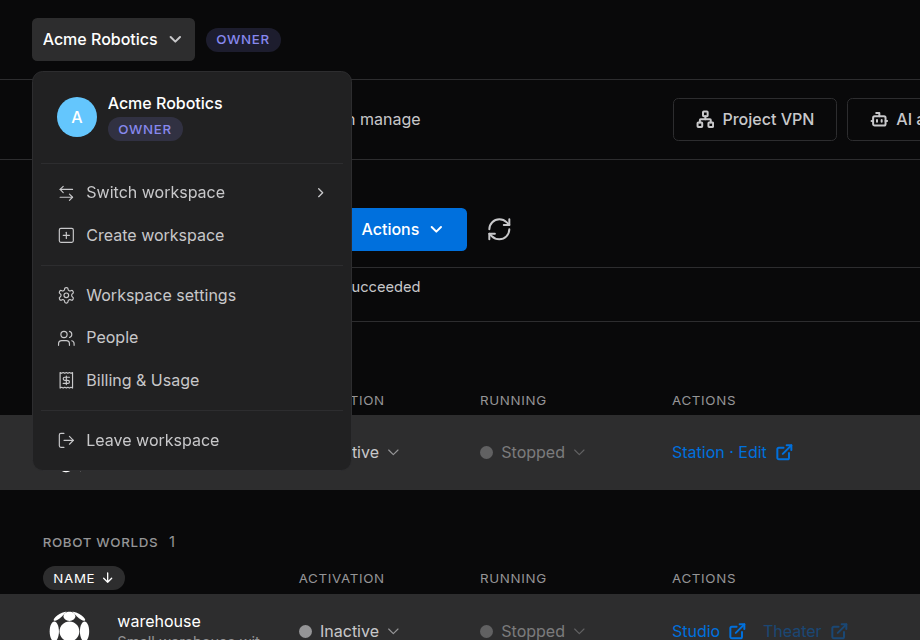
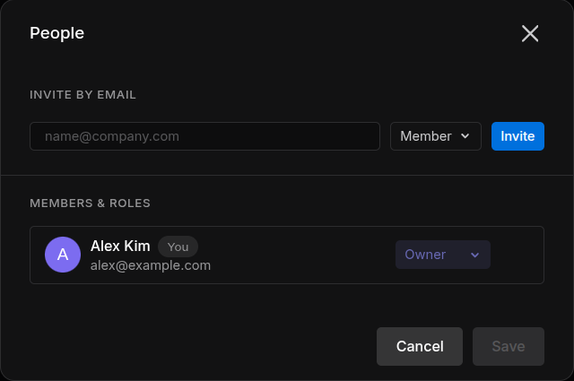
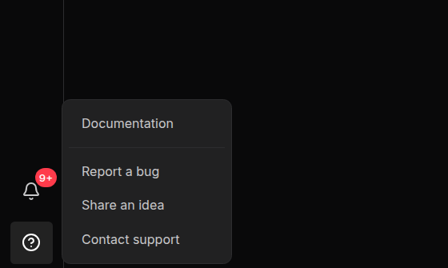

Workspaces and People¶
A workspace is where a team works together in the Sodero Cloud portal. It holds the team's projects and people, the project libraries, and one plan with its credits (Credits and Usage). This page also covers the portal's navigation and help.
The Workspace Menu¶
You can belong to several workspaces. The portal shows one at a time: its name is at the top left of the page, followed by a badge with your role. Click the name to open the workspace menu.


The menu holds Switch workspace, Create workspace, Workspace settings (owner only), People, Billing & Usage (Credits and Usage) and Leave workspace. Everyone in the workspace can open People and Billing & Usage.
Roles¶
Everyone in a workspace has one role: Owner, Admin or Member. A workspace has exactly one owner. Roles inside a project are separate: see Project Access and Roles.
| Action | Owner | Admin | Member |
|---|---|---|---|
| Invite people | Yes | As Member only | No |
| Remove people | Yes | Members only | No |
| Change roles, cancel invitations, change workspace settings, transfer ownership, delete the workspace | Yes | No | No |
| Create projects | Yes | Yes | When Members can create projects is on |
| Upload and delete files in project libraries | Yes | Yes | When Members can manage the Library is on |
| Manage every project in the workspace, Empty all trash | Yes | Yes | No: members have the role they were given in each project |
1. Create a Workspace¶
Open the workspace menu, choose Create workspace, enter a name of up to 30 characters and click Create. You are the owner of the new workspace, and the portal switches to it. Each workspace has its own plan and credits.
2. Switch Between Workspaces¶
Open the workspace menu, point at Switch workspace and click a workspace. A check mark shows the current one.
3. Invite People¶
Owners and admins invite people by email.
- Open the workspace menu and choose People.
- Under Invite by email, type the person's email address.
- Choose the role: Member (the default) or Admin. Only the owner can invite admins.
- Click Invite. The invitation is sent at once, without Save.


The person receives an email titled Sodero workspace access: NAME with a Review access button. An invitation is valid for 7 days; inviting the same address again replaces it. The owner sees open invitations in the list, marked Pending. If the dialog says Couldn't send invitation. Try again., check the address; people who are already members cannot be invited.
Tip: To share one project only, invite the person to that project instead (Share and Collaborate).
4. Join a Workspace from an Invitation¶
- Sign in with the address the invitation was sent to. If you do not have an account yet, create one with that address first.
- While you are signed in, open the invitation email and click Review access. The portal accepts the invitation at once.
- Open the workspace menu, point at Switch workspace and choose the new workspace.
If the portal says Invite has expired., ask for a new invitation. If it says You're signed in with a different account. …, sign out, sign in with the address the invitation was sent to and open the link again.
5. Manage Members and Invitations¶
Open the workspace menu and choose People. Under Members & roles, each person has a row with their name, email address and role.
- Change a role (owner): choose Admin or Member in the person's role menu.
- Remove a person: click × on their row. The owner can remove admins and members; admins can remove members.
- Cancel an invitation (owner): click × on the row of the pending invitation.
Click Save to apply the changes; Cancel discards them. Nobody can change their own role or remove themselves. Members see the list read-only.
6. Change Workspace Settings¶
Only the owner sees Workspace settings in the workspace menu.
| Section | What you can do |
|---|---|
| Profile | Change color sets the color behind the workspace's initial; Remove resets it. |
| Basic info | Edit Name (up to 30 characters) and click Save |
| Permissions | Members can create projects, and Members can manage the Library (upload and delete files in project libraries). Both are off by default. |
The color and the permissions are saved as soon as you change them. The dialog also holds Transfer ownership and Delete workspace.
7. Transfer Ownership¶
- In Workspace settings, under Ownership, click Transfer ownership. The button stays disabled until someone else has joined the workspace.
- Choose the new owner from the members and click Next.
- Click Transfer ownership to confirm, then Done.
You become an admin.
8. Delete a Workspace¶
Deleting a workspace cannot be undone. It permanently deletes every project, file and setting in the workspace, and everyone loses access.
Before you delete a workspace, deactivate its active Robot Systems and Robot Worlds and download local copies of anything you want to keep.
- In Workspace settings, under Delete workspace, click Delete workspace.
- Type the workspace's exact name and click Delete. The portal opens your next workspace.
9. Leave a Workspace¶
Open the workspace menu, choose Leave workspace and click Leave. You lose access to the workspace and its projects, except projects you were invited to directly. To come back, someone must invite you again.
The owner cannot leave (You're the only owner of this workspace. Transfer ownership before leaving.): transfer ownership first.
Guest Projects¶
A guest project is a project you were invited to without being a member of its workspace. To see your guest projects, open the workspace menu, point at Switch workspace and choose Guest projects (N), shown when you have some.
In this view, the top bar reads Guest workspace, and Trash and Notifications are hidden. In each project, you have the role you were invited with. Guest projects use the credits of the workspace they belong to.
Notifications¶
Click the bell (Notifications) in the left navigation bar to see recent activity in the current workspace, such as projects created or trashed, people added or removed, and Robot Systems and Robot Worlds started, stopped or failed. A red badge counts the unread entries; Read All marks them read.
The Left Navigation Bar¶
The left navigation bar is the column of icons on the left of every portal page.
| Item | Opens |
|---|---|
| Sodero logo, Home | Your Recent and Favorites projects, Robot Systems and Robot Worlds |
| Projects | The projects of the current workspace, or your guest projects |
| Library | My Library and the project libraries (Libraries) |
| Trash | Items moved to Trash in this workspace (Projects) |
| Notifications, Help | See below |
| Your avatar | Account Settings, Sign-in & Security, Theme and Sign out (Sign In and Account) |
Help and Feedback¶
Click Help in the left navigation bar. The menu has Documentation, Report a bug, Share an idea and Contact support.


- Report a bug or Share an idea: fill in the fields, attach up to 10 PNG, JPG or PDF files (20 MB in total) if you like, and click Submit report or Submit idea. Sodero receives it with your name, email address and account ID, the page you were on and your browser details.
- Contact support opens the Sodero website in a new tab.
Do not include passwords, access keys or other sensitive information in the text or in the attachments.